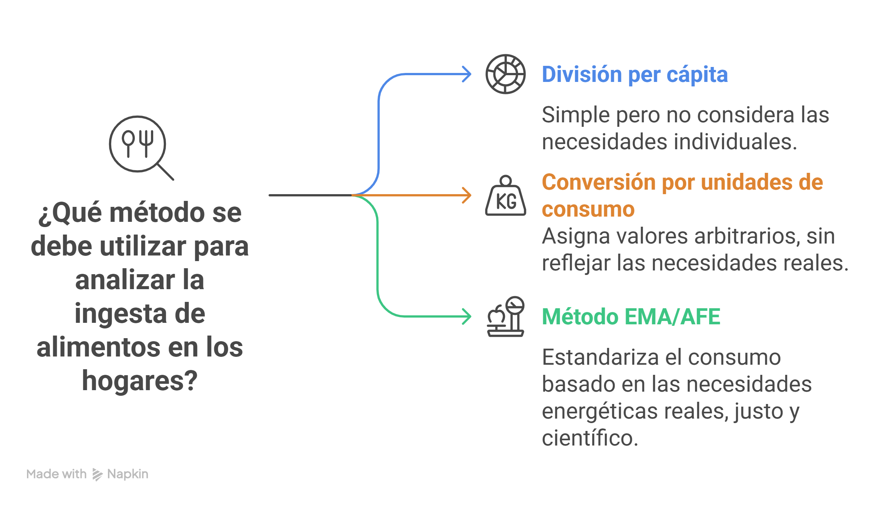
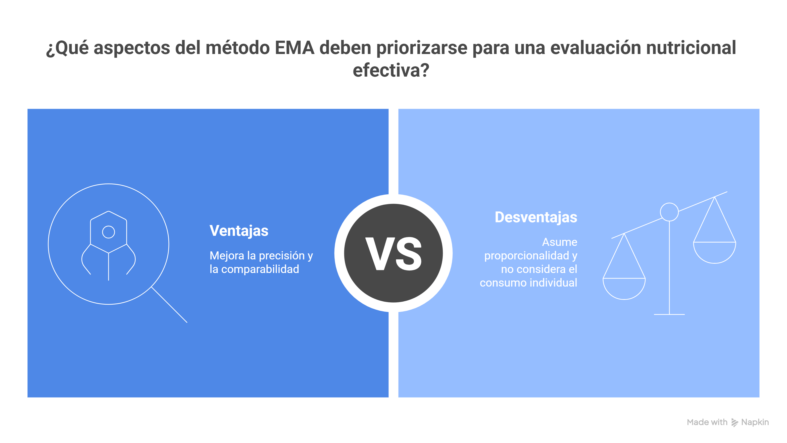

Módulo 11
El Método del Equivalente de Mujer Adulta (EMA/AFE)
Sumario
Contexto y Relevancia del Método
La Mujer Adulta (18-29 años) como Punto de Referencia
Cálculo de Factores de Conversión de EMA
Ventajas y Desventajas del Método EMA
Aplicación Práctica del Método EMA/AFE
Contexto y Relevancia del Método
Para analizar la ingesta de alimentos en los hogares, se pueden utilizar varios métodos. Uno de los más sencillos es la simple división per cápita, que divide el consumo total entre el número de personas en el hogar, sin considerar edad o sexo. Otro enfoque es la conversión por unidades de consumo, que asigna un valor arbitrario a cada miembro. Sin embargo, estos métodos no reflejan de manera precisa las diferencias en las necesidades energéticas y nutricionales. El método del Equivalente de Mujer Adulta (EMA/AFE) surge como una alternativa superior, ya que estandariza el consumo de alimentos del hogar de una manera más justa y científicamente fundamentada, al relacionar la ingesta con los requerimientos energéticos reales de cada individuo.

La Mujer Adulta (18-29 años) como Punto de Referencia
El método EMA/AFE establece a una mujer de 18 a 29 años, saludable y con un nivel de actividad moderado, como la unidad base para la conversión. Su requerimiento energético promedio se considera 1.0 EMA. Este no es un valor absoluto, sino un punto de referencia que permite expresar el consumo de los demás miembros del hogar en relación con esta unidad. Por ejemplo, si un hombre tiene un factor de 1.25 EMA, su requerimiento energético es un 25% mayor que el de la mujer de referencia, mientras que un niño con un factor de 0.6 EMA tiene un requerimiento del 60%.
Cálculo de Factores de Conversión de EMA
Los factores de conversión se derivan de las tablas de requerimientos energéticos recomendados por organismos internacionales. A continuación, se presenta un ejemplo de cómo se calculan y aplican estos factores:
Paso 1: Obtener las Necesidades Energéticas Promedio: Se utilizan los datos de requerimientos de energía (en kilocalorías o kilojulios) de grupos de edad y sexo, por ejemplo, los proporcionados por la FAO o la OMS.
Paso 2: Establecer la Referencia: La necesidad energética promedio de la mujer de 18-29 años se convierte en el denominador para todos los cálculos.
Paso 3: Calcular el Factor: El factor de conversión para cada grupo de edad y sexo se calcula dividiendo sus necesidades energéticas promedio por las de la mujer de referencia.
A continuación, una tabla con factores de conversión de ejemplo, basados en necesidades energéticas típicas:
| Grupo de Edad y Sexo | Necesidad Energética (kcal/día) | Factor EMA/AFE (respecto a 2,000 kcal) |
|---|---|---|
| Niños (1-3 años) | 1,200 | 0.6 |
| Niños (4-8 años) | 1,600 | 0.8 |
| Hombres (18-29 años) | 2,500 | 1.25 |
| Mujeres (18-29 años) | 2,000 | 1.00 |
| Hombres (30-50 años) | 2,400 | 1.20 |
| Mujeres (30-50 años) | 1,900 | 0.95 |
Ventajas y Desventajas del Método EMA
El Método del Equivalente de Mujer Adulta (EMA/AFE) tiene ventajas y desventajas importantes. Entre sus principales beneficios está que ofrece una estimación más precisa del consumo alimentario al considerar las diferencias en necesidades energéticas según edad, sexo y actividad, lo que permite comparar de manera más justa entre hogares con distintas composiciones. Además, es muy útil para diseñar políticas nutricionales, como la fortificación de alimentos, al identificar mejor los grupos en riesgo. Sin embargo, su mayor limitación es que asume que todos los alimentos se distribuyen en el hogar de forma proporcional a esas necesidades energéticas, lo cual no siempre ocurre en la realidad. Tampoco captura el consumo individual, ya que no tiene en cuenta preferencias personales, desigualdades en la distribución intrafamiliar ni el consumo fuera del hogar, por lo que sigue siendo una aproximación a nivel de hogar.

Aplicación Práctica del Método EMA/AFE
El principal uso de este método es para ajustar el consumo de alimentos reportado en las encuestas de hogares, lo que permite estimar una distribución más equitativa y precisa de los alimentos.
Paso 1: Totalizar los Factores EMA del Hogar: Suma los factores de conversión de todos los miembros del hogar. Por ejemplo, un hogar con una madre (1.0), un padre (1.25) y un hijo (0.8) tendría un total de 3.05 EMA.
Paso 2: Ajustar el Consumo Total del Hogar: Divide el consumo total de alimentos del hogar (en kilogramos, gramos, etc.) por el total de EMA calculado en el paso anterior. Esto te da el consumo por EMA, que es un valor estandarizado y comparable entre diferentes hogares.
Paso 3: Estimar la Distribución de Alimentos: Al ajustar el consumo total de un hogar por el factor EMA, obtienes una estimación más precisa de la distribución per cápita de los alimentos. Esto permite que el modelo de fortificación identifique con mayor precisión los grupos demográficos con ingestas dietéticas inadecuadas, independientemente del tamaño y composición de su hogar.
Preparándonos para el Ejemplo Práctico
En la sección de casos de uso, aplicaremos lo que hemos aprendido sobre el método EMA/AFE con un ejemplo concreto en R. Utilizaremos un conjunto de datos simulado de un hogar para calcular los factores EMA, ajustar el consumo total y obtener el consumo per cápita ajustado. Este ejercicio te permitirá consolidar los conceptos teóricos y te preparará para el análisis de datos reales en el futuro.
Biblografía
Energy and protein requirements. Report of a joint FAO/WHO/UNU Expert Consultation. World Health Organ Tech Rep Ser. 1985;724:1-206. PMID: 3937340.
Food and Agriculture Organization of the United Nations, United Nations University, World Health Organization, editores. Human energy requirements: report of a Joint FAO/WHO/UNU Expert Consultation: Rome, 17-24 October 2001. Rome: Food and Agricultural Organization of the United Nations; 2004. 96 p. (FAO, food and nutrition technical report series).